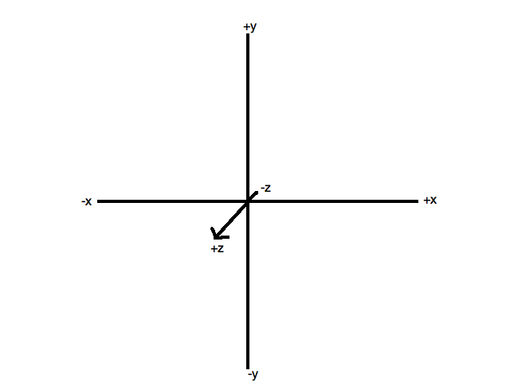
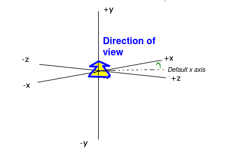
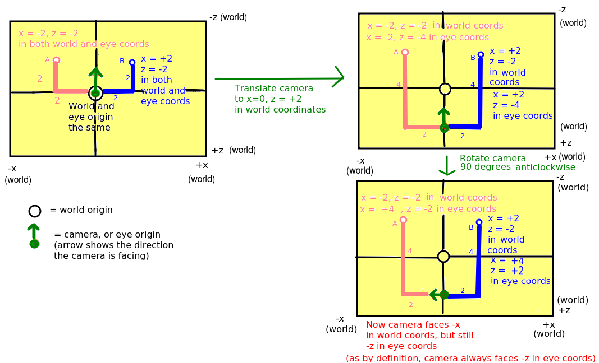
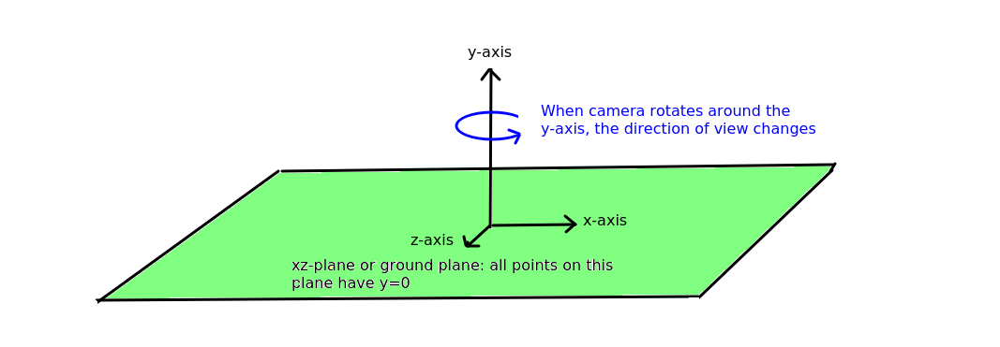
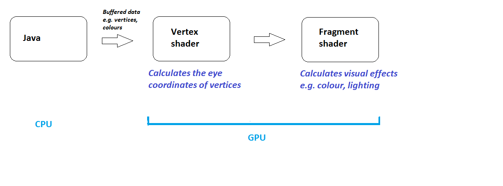

Mobile Development and 3D Graphics - Part 7
Introduction to OpenGL on Android
OpenGL is the standard API for cross-platform 3D graphics.
With OpenGL you can create hardware-accelerated 3D graphics on a range of
operating systems, including Windows, Linux, Mac OS X and Android. OpenGL takes advantage of a machine's Graphics Processing Unit (GPU) for fast rendering.
In OpenGL, 3D shapes are made up of of individual triangles, each of which has three vertices (points making up the triangle).
Important OpenGL concepts
OpenGL coordinate system
Since OpenGL is a 3D API, it uses three coordinates: x, y and z. It's
important to realise that x increases to the right, and y increases upwards, This is
different to the situation in 2D computer graphics, where y increases
downwards - but is the same as in standard maths.
Because this is 3D graphics, we have a third axis, the z axis. You can
think of this as pointing out at you from the screen, so that positive z
coordinates are "in front of the screen" and negative z coordinates are
"behind the screen". This is shown in the diagram below.

OpenGL and OpenGL ES
OpenGL ES is a version of OpenGL optimised for devices with
limited resources, such as mobile devices (although these days many mobile
devices have capabilities comparable with traditional desktop machines!)
OpenGL ES programming is slightly different to standard OpenGL:
it is somewhat more complex but more efficient. There are various versions of
OpenGL ES: we will use OpenGL ES 2.0 as it provides what we need.
The API is significantly different to standard OpenGL. Drawing shapes takes
on a different approach: rather than drawing each triangle individually,
all vertices making up a complex shape are sent direct to the graphics card
at once, in a buffer, for fast, efficient drawing.
The world and eye coordinate systems
When working with OpenGL, we have two coordinate systems. An OpenGL application typically comprises a virtual world which we can wander around, as a player in a game or a user of a VR or AR app. World coordinates define the position of objects within this virtual world. We also have the eye coordinate system. This describes the coordinates of objects with respect to the user's current view of the world, which may not be the same. We expand upon the difference below.
Typically, the coordinates of 3D objects in an OpenGL application will be specified in our code, or more commonly, in an external data source such as a file or the web.
The coordinates of these objects are with respect to our virtual world, and can be thought of as the "true" coordinates of the objects within our 3D world - thus they are world coordinates. They define the absolute position of each object in our virtual world - in that respect they are conceptually similar to latitude and longitude. However, our view of
the coordinates might be different. Imagine the origin of the 3D world is
the central room in a 3D game. We might not be at that position in the world,
we might be in a completely different room, and furthermore,
we might not be looking down the negative z-axis as in the default view.
We might be looking in a direction aligned at 45 degrees to both the x and
z axes, as shown in the diagram below. Additionally, we might be on a slope,
in which case, the up direction does not correspond to the y axis.

The current on-screen 3D coordinates of a given object, with respect to the user's current view, are the eye coordinates of that object. The eye coordinate (0,0,0) is always the user's position within the world. And in eye coordinates, we are always facing negative z, with x increasing to the right and y increasing upwards, even if we are not facing negative z in world coordinates.
When rendering 3D shapes, we use eye coordinates, because we want to render them with respect to the current view. Thus we have a problem, because the shapes will typically be stored in a file or on the web as world coordinates. So we have to define a transformation to convert the world coordinates to eye coordinates. This transformation has two components:
- A translation, to translate the coordinates from the world system to the eye system.
- A rotation, to rotate the field of view from the direction currently being faced in world coordinates into facing negative z in eye coordinates.
This is explored in the following section.
The camera
In many 3D applications, we want to allow the user to navigate through a 3D world, e.g. (as we have seen) a game or a VR or AR app. In these cases, we define the objects making up the world (which might include 3D buildings, terrain, points of interest, etc) in our code as world coordinates. We then define a camera, which represents the user's position in the world and the direction in which they are facing. Such a camera would have a set of world coordinates defining its position within the world, as well as a rotation. Such a camera, representing the user's position, is known as a first-person camera; other types of camera also exist which present a view of the world from the perspective of something other than the user (e.g. from the perspective of a certain room in a game, or a non-player character).
The world coordinates of the camera would vary, as the camera moves round the world. However, because a first-person camera represents the user's position, its eye coordinates will always be x=0, y=0, z=0.
Translating and rotating the camera
As seen above, the camera has a position and rotation. In more detail, it has:
- A defined position in the world (cx, cy, cz), as world coordinates;
- A defined set of rotations about each of the three axes in our
world (x, y and z)
By default, the camera is placed at the world origin (cx=0, cy=0, cz=0) and
faces negative z. In this default position, world coordinates are equal to
eye coordinates. However we can move the camera around the world (e.g. a
player moving around in a game) and rotate it so it faces a direction other
than negative z. The diagram below (which ignores y coordinates, for
simplicity, in other words it shows the xz-plane - the flat surface on which every point has y=0) illustrates two such operations:
- Firstly, the camera is translated so that it is at position cx=0, cz=+2;
- Secondly, the camera is rotated by 90 degrees anticlockwise.

We are going to examine how the eye coordinates of points A and B
change as we move the camera.
- Initially, the eye coordinates of A and B are equal to their world
coordinates, as the camera is at the default position;
- When we move the camera to cx=0, cz=+2, the difference in z
coordinates between the camera and the two points increases from 2 to 4.. In other words, with respect to the camera, or in eye coordinates A and B both have z coordinates of -4. The camera is at cz=+2, and still facing negative z, so points A and B both have z coordinates of -4 as they are both in front of the camera and four units away in the z direction. The world z coordinates of A and B, by contrast, are still -2: world coordinates do not change unless the objects move to a different position within the world (e.g. a monster moving in a game)
- We then rotate the camera by 90 degrees anticlockwise. This is done around the y-axis as shown in the diagram below:

By doing this, the camera is now facing -x in world coordinates. However, in eye coordinates, the camera is still facing -z, as it always does this by definition.
- As a result, A and B are now both to the right of the camera, rather than in front of it. They are still both 4 units away from the camera, as the camera position has not changed (only its rotation), but since they are 4 units to the right of the camera (rather than in front), the eye x coordinate of both is +4 (rather than the eye z coordinate being -4 as was the case originally). Remember that by definition, in eye coordinates, positive x is always to the right.
- The eye z coordinates of A and B will now differ, as A is now in front of the camera and B is behind the camera. Consequently, A will have a negative eye z coordinate and B will have a positive eye z coordinate. As both A and B are two units distance along the eye z axis, it follows that the eye z coordinate of A will be -2 and the eye z coordinate of B will be +2.
Don't get confused by the word "camera"!
It's important to not get confused by the terminology here. The first-person OpenGL camera is not the same as the actual hardware camera used to take pictures on the device. When we move onto AR, we will use the term "hardware camera" to distinguish the physical camera from the OpenGL camera.
World and Eye Coordinates Demo
Will appear soon.
Matrices
Many of you will have come across matrices in the past, at
school or college. Matrices are two-dimensional arrays of numbers which are most commonly used to represent geometric transformations which can be applied to shapes (both 2D and 3D), such as rotation, translation, magnification, stretch and shear. There are also other, more specialised, applications of matrices in science and maths - but these are out of the scope of this module. We will not go into the maths of matrices in great detail, but you need to be aware that a matrix represents a geometric transformation of some kind, such as translation or rotation. You also need to be aware of various matrices which exist within OpenGL which are involved in the rendering process. We will expand upon matrices a little next week.
The view matrix
OpenGL defines a matrix which specifies the transformation between the
world coordinates and the eye coordinates. This is called the view matrix. Every time you do a translation or rotation in code, the view matrix
is multiplied by the matrix which defines that rotation/translation. Then
finally the coordinates specified in code (the world coordinates) are multiplied by the view matrix to give the coordinates with respect to the user's current view.
The projection matrix
The other type of matrix which is used in OpenGL is the projection matrix. This transforms the coordinates of shapes to add a sense of perspective, in other words it makes nearby shapes appear larger and further-away shapes appear smaller. So, shapes with eye z coordinates close to 0 (e.g. -1, -2) will appear relatively large, whereas shapes with negative z coordinates further from 0 (-10, -20, etc) will appear smaller. Without the projection matrix, no perspective is applied and shapes would appear the same size irrespective of their eye z coordinate. In fact, the exercises this week will not involve the projection matrix, and therefore, even though you will be doing some OpenGL programming the shapes you draw will appear flat, without a sense of perspective.
Shaders
This discussion applies to OpenGL ES in general; not just Android OpenGL ES 2.0.
Android OpenGL ES 2.0 (and all OpenGL ES 2.0 implementations) require the use of
shaders. Shaders are small programs, written in a C-like language,
GLSL (GL Shader Language),
which run on the graphics card (GPU) and specify how vertices, and thus
shapes, appear on the screen (position, colour, lighting, textures etc).
A shader-based OpenGL application will consist of a CPU based program plus
a series of shaders running on the GPU. The CPU program passes information
to the shaders through a process known as the rendering pipeline.
Types of shader
There are two types of shader:
- Vertex shaders: specify where vertices appear on the screen, in particular, how they are transformed from world space to eye space and how perspective is applied.
- Fragment (or pixel) shaders: determine how individual
pixels appear on-screen (colour, lighting effects, etc)
Vertex shaders run before fragment shaders in the rendering
process (called the rendering pipeline). This is illustrated in the diagram below:

Shader variables
There are three classes:
- Attribute variables: for quantities which vary for each
vertex (e.g. vertex position)
- Uniform variables: for quantities which remain the same
per render (e.g. the matrix representing the current rotation/translation
of the scene, the drawing colour)
- Varying variables (to be covered later)
Example of a vertex shader
attribute vec4 aVertexPosition;
void main(void)
{
gl_Position = aVertexPosition;
}
- This shader sets the position of the current vertex
(gl_Position; this is a built-in GLSL variable) to the
attribute variable aVertexPosition.
- The attribute variable aVertexPosition (data type vec4;
this is an inbuilt GLSL data type) will contain the current position from the
vertex buffer;each vertex from the buffer in turn is sent to the vertex
shader.
- In our Kotlin code we link the buffer with the aVertexPosition
variable, as we will see later.
- This example does not apply the view or perspective matrix: we will look at these
below.
Example of a fragment shader
void main (void)
{
gl_FragColor = vec4(1.0, 0.0, 0.0, 1.0);
}
-
This is a simple fragment shader. All we do is set the colour of the current
fragment (area of pixels on the screen surrounding a given vertex) to red
(RGB 1,0,0; the fourth argument is the alpha - transparency -
component)
- gl_FragColor is an inbuilt GLSL variable representing the
current fragment colour. Note the use of vec4 again.
A fragment shader using a user-defined colour
In this example we read in the colour from the uniform variable
uColour.
precision mediump float;
uniform vec4 uColour;
void main(void)
{
gl_FragColor = uColour;
}
Note the three lines at the top, which specify that we are using high-precision floats.
This is needed if you pass across variable colours to the fragment shader.
Components of an Android OpenGL Application
An Android OpenGL application includes the following components:
- A GLSurfaceView. This is a View which will display your OpenGL scene.
- A class implementing the interface GLSurfaceView.Renderer, which contains your actual 3D rendering.
This can either be the GLSurfaceView, or, if desired, a separate class to separate out the 3D rendering code from general code for managing a View. This contains a number of methods which must be implemented, which handle different aspects of the rendering process.
Methods of GLSurfaceView.Renderer
You need to provide implementations of these three methods.
- onSurfaceCreated(unused: GL10, config: EGLConfig) -
this runs when the OpenGL scene is first created. Setup code typically goes in here.
- onDrawFrame(unused: GL10) -
this runs each time we want to draw a new frame, e.g. when we update the
OpenGL scene with new objects or move around in the world.
- onSurfaceChanged(unused: GL10, width: Int, height: Int) -
this runs whenever the dimensions of the view are changed (e.g. change from
landscape to portrait)
Absolute basic example
Here is an absolute basic example of an Android OpenGL application. It does not draw any graphics; it just shows you how you setup the OpenGL environment, and initialises a black screen ready for rendering 3D content. First we would have a main activity, as always:
package com.example.opengl
import androidx.appcompat.app.AppCompatActivity
import android.os.Bundle
class MyActivity: AppCompatActivity() {
override fun onCreate(savedInstanceState: Bundle) {
val glView = OpenGLView(this)
setContentView(glView)
}
}
We create an object of class OpenGLView which extends from GLSurfaceView (see below) and make this the main view of our activity. Now we move on to the OpenGLView object:
package com.example.opengl
import android.opengl.GLSurfaceView
import android.content.Context
class OpenGLView(ctx: Context) :GLSurfaceView(ctx) {
init {
setEGLContextClientVersion(2) // specify OpenGL ES 2.0
val renderer = OpenGLRenderer()
setRenderer(renderer) // set the renderer for this GLSurfaceView
}
}
The OpenGLView class doesn't use a lot, besides specifying we are using OpenGL ES 2.0, and setting the renderer for the OpenGLView. The renderer here is a separate class, OpenGLRenderer, shown below:
package com.example.opengl
import android.opengl.GLES20
import android.opengl.GLSurfaceView
import java.nio.ByteBuffer
import java.nio.ByteOrder
import java.nio.FloatBuffer
import javax.microedition.khronos.egl.EGLConfig
import javax.microedition.khronos.opengles.GL10
class OpenGLRenderer: GLSurfaceView.Renderer {
// We initialise the rendering here
override fun onSurfaceCreated(unused: GL10, config: EGLConfig) {
// Set the background colour (red=0, green=0, blue=0, alpha=1)
GLES20.glClearColor(0.0f, 0.0f, 0.0f, 1.0f)
// Enable depth testing - will cause nearer 3D objects to automatically
// be drawn over further objects
GLES20.glClearDepthf(1.0f)
GLES20.glEnable(GLES20.GL_DEPTH_TEST)
}
// We draw our shapes here
override fun onDrawFrame(unused: GL10) {
GLES20.glClear(GLES20.GL_COLOR_BUFFER_BIT or GLES20.GL_DEPTH_BUFFER_BIT)
}
// Used if the screen is resized
override fun onSurfaceChanged(unused: GL10, w: Int, h: Int) {
GLES20.glViewport(0, 0, w, h)
}
}
Note here:
- In the
init block, we specify that we are using OpenGL ES version 2.0 with
setEGLContextClientVersion(2) and then specify that the current object will act
as the renderer with setRenderer(this).
- In onSurfaceCreated() we set the background colour to black (red 0, green 0, blue 0 and alpha - i.e transparency - 1, indicating fully opaque)
- Also in onSurfaceCreated() we clear the depth buffer and turn depth testing on. The depth buffer is an OpenGL feature which stores the "depth" of objects, i.e. the distance from the viewing position. This allows OpenGL to automatically work out whether one object is behind another, and not draw it if so.
- In onDrawFrame(), all we do for the moment is blank the screen. Drawing will go here later.
- In onSurfaceChanged() we adapt our view to the new width and height of the screen (these might change by rotating the device from portrait to landscape or vice-versa). Later on we will explore the perspective matrix: this basically sets the perspective of our view so that further-away objects appear smaller than nearby ones.
Loading in shaders
The code above obviously does not do anything. To get it to draw shapes, we
first of all need to define our vertex and fragment shaders. Typically you put your shaders inside Strings, as follows (it's a bit messy but standard practice, see
this
article on the Android developer site). The string variables containing the shader source would be attributes of your renderer class.
val vertexShaderSrc =
"attribute vec4 aVertex;\n" +
"void main(void)\n" +
"{\n"+
"gl_Position = aVertex;\n" +
"}\n"
val fragmentShaderSrc =
"precision mediump float;\n" +
"uniform vec4 uColour;\n" +
"void main(void)\n"+
"{\n"+
"gl_FragColor = uColour;\n" +
"}\n"
You then need to compile the shaders into native GPU machine code. A method is a good way to do this, as you will need to compile each shader (the vertex shader and the fragment shader).
fun compileShader(shaderType: Int, shaderCode: String) : Int {
val shader = GLES20.glCreateShader(shaderType)
GLES20.glShaderSource(shader, shaderCode)
GLES20.glCompileShader(shader)
return shader
}
shaderCode is a String containing your shader code.
shaderType is a constant integer representing the shader type: it will be either GLES20.GL_VERTEX_SHADER or GLES20.GL_FRAGMENT_SHADER.
The method creates a shader of the given type. This gives us an int variable, shader, which is a numerical handle on the shader. This is returned from the method and we can use it to link the two shaders into a single shader program.
Linking shader code
Having compiled the vertex and fragment shaders, we then link them into a usable shader program. Again this is best done as a method:
fun linkShader(vertexShader: Int, fragmentShader: Int) : Int{
val shaderProgram=GLES20.glCreateProgram()
GLES20.glAttachShader(shaderProgram, vertexShader)
GLES20.glAttachShader(shaderProgram, fragmentShader)
GLES20.glLinkProgram(shaderProgram)
GLES20.glUseProgram(shaderProgram)
return shaderProgram
}
Here, vertexShader and fragmentShader are the int variables returned from compileShader(), above. So we create a shader program, attach the individual shaders to it, and link them. We then call GLES20.glUseProgram() to specify that we want to use this shader program, not another one (it is possible for a single OpenGL application to have several shader programs which we can switch between).
We would typically setup our shaders in onSurfaceCreated(), as we only need to do it once. Compiling and linking them each time we render a frame would be extremely inefficient.
Setting up a vertex buffer
Remember from the discussion above that the vertex data needs to be sent to the GPU in a buffer. Here is how to create a buffer:
fun makeBuffer(vertices: FloatArray) : FloatBuffer {
val bbuf : ByteBuffer = ByteBuffer.allocateDirect(vertices.size * Float.SIZE_BYTES)
bbuf.order(ByteOrder.nativeOrder())
val fbuf : FloatBuffer = bbuf.asFloatBuffer()
fbuf.put(vertices)
fbuf.position(0)
return fbuf
}
We pass in, as a parameter, a FloatArray of the x, y and z components of each vertex, allocate a ByteBuffer to store raw bytes (size: the length of the array multiplied by the size of the float data type),
generate a float buffer from the byte buffer, add the array to the float
buffer and set the position to 0 (the start of the buffer).
We would typically setup our buffers in onSurfaceCreated(), as we only need to do it once. Doing it each time we render a frame would be very inefficient.
Drawing buffered data
Having setup our buffers we need to draw it in onDrawFrame().
To do this we need to send the buffered data to the GPU and
tell the GPU about the format of our data. How do we do that?
Accessing the shader from Kotlin
The next thing we need to do is to link our buffer data to a shader variable, so that the shader can process each vertex in the buffer in turn.
To be able to use a shader variable from Kotlin, we need to get
a "handle" on it to allow Kotlin to manipulate it, and then link this
"handle" to our vertex data. To obtain the "handle", we can use the method
glGetAttribLocation(), and then enable it
with glEnableVertexAttribArray().
The name of the shader variable needs to be passed to gl.getAttribLocation().
Here is a code example, which
stores the handle in the variable ref_aVertex (note how we use
the shaderProgram variable which we created when we compiled and linked the shader).
// Create a reference to the attribute variable aVertex
val ref_aVertex = GLES20.glGetAttribLocation(shaderProgram,"aVertex")
// Enable it
GLES20.glEnableVertexAttribArray(ref_aVertex)
We can also get a handle on uniform variables. Remember from the discussion above that a uniform variable is a variable whose values do not vary from vertex to vertex. A good example of a uniform variable is a colour (assuming the shape is of a uniform colour). GLES20.glGetUniformLocation() works in exactly the same way as GLES20.glGetAttribLocation() e.g.
val ref_uColour = GLES20.glGetUniformLocation(shaderProgram,"uColour")
Having obtained a reference to the uniform variable from outside our shader, we
then need to send data to it.
The method GLES20.glUniform4fv() is one example of a group of related methods for
sending uniform variables to the shader. This specific method glUniform4fv
means that it expects a float vector (i.e. array) with
4 members (red, green, blue and alpha - i.e. transparency - components).
Here is an example. Note how we pass in the reference to the shader variable and the array we want
to send.
val colour = floatArrayOf(0.0f, 0.0f, 1.0f, 0.0f)
GLES20.glUniform4fv (ref_uColour, 1, val, 0)
(The other arguments mean: 1=we are modifying one value, and 0=the offset in the input array to
the data we're interested in. See
the OpenGL documentation).
There are other similar methods for sending other types of data (e.g. int arrays, 3-member float arrays, etc) to a uniform variable in the shader.
Drawing the shapes
Now onto the actual drawing itself.
Having placed the vertices in a buffer and obtained a handle on the
shader variable which will contain each vertex, we can now actually draw
the shape. Drawing a shape is performed by specifying a buffer
or buffers to use (we could have one buffer for vertices and another for
colours, for example) and then telling Android OpenGL ES 2.0 what format
the buffer data is in and what shader variable should receive the buffered
data.
Here is how to do this.
- We need to tell Android OpenGL ES 2.0 what format the data is in, and what
shader variable will receive the data.
To do this, we use
glVertexAttribPointer():
GLES20.glVertexAttribPointer(ref_aVertex, 3, GLES20.GL_FLOAT, false, 0, vertexBuffer)
This is an interesting function as it takes several arguments
(see
OpenGL - this is the C version of the method but it takes the same arguments as the Java/Kotlin version - and this blog article). The function allows us to be highly flexible with our data, as we will see below:
- Firstly, the handle on the shader attribute variable - this is needed
as we need to specify the shader variable to send the vertex data to;
- Secondly, the number of elements per vertex (here, 3 as there are
x, y and z coordinates);
- Thirdly, the type of data: here we are dealing with FLOAT variables
(32-bit floating point numbers);
- The fourth argument, whether to normalise the data,
can be generally left as false;
- Next is the stride. This is the number of bytes in between
each record (each vertex here). Each vertex will occupy
the number of components
per vertex (3) multiplied by the number of bytes per component (4 since
we are dealing with FLOATs), i.e. 12. However, here we have used the
value 0 rather than 12. Why is this?
Zero is a special value
to indicate that each vertex coordinate record is immediately followed by
another vertex coordinate
record. Would this not always be the case? It need not
be: it would be possible to have a single buffer
containing not just x,y,z coordinate data for each vertex but also other
data (e.g. the RGB colour of the current vertex),
in which case the stride - the difference in bytes
between the start of the first vertex and the next - would be
greater than 12 as each record would contain not only the 12 bytes for
the vertex coordinates but also additional data. In such a case, any data
for each record
after the initial 12 bytes would be discarded as we have told
glVertexAttribPointer() with the second and third arguments
that we have 3 components per vertex
and each component occupies 4 bytes. This is shown below.

- Lastly is the vertex buffer containing the data we want to draw.
- Finally we draw the triangle. This works by passing each vertex in the
selected buffer to the shader in turn, loading each vertex into the
currently-selected shader variable:
GLES20.glDrawArrays(GLES20.GL_TRIANGLES, 0, 3)
The second argument 0 is the index of the first vertex, and the
third argument 3 is the number of vertices in total.
Extending the example to drawing two triangles
The previous example could be extended very easily to draw two triangles.
The only differences are that we would fill the buffer with 6 points rather
than 3, and change the gl.drawArrays() call to reflect this:
GLES20.glDrawArrays(GLES20.GL_TRIANGLES, 0, 6)
Because we are in triangle-drawing mode (GLES20.GL_TRIANGLES), the
glDrawArrays() call will know to treat each set of three vertices as
a separate triangle.
Another example:
GLES20.glDrawArrays(GLES20.GL_TRIANGLES, 3, 3)
If the buffer had at least 6 vertices (i.e. at least 2 triangles), this would
draw the second triangle only because the start vertex is 3 (the first vertex
of the second triangle), and the number of vertices to draw is 3.
Exercise
We are going to develop a simple OpenGL application to draw first one, then
two red triangles.
- Start with the template above, containing an activity, a GLSurfaceView and a Renderer.
- Add the methods provided above to compile and link the shaders, and to initialise a vertex buffer using a float array of coordinates.
- Add attributes to your Renderer:
shaderProgram : an Int, containing a reference to the shader program. Initialise it to -1. If the shader program is created successfully, it will be a positive integer, so later on you can test whether the shader program was compiled and linked successfully by testing that this variable is at least 1.vertexBuffer : a nullable FloatBuffer. This will contain the vertices when loaded.- Two strings, one for each shader source. The shader code is provided above.
- In
onSurfaceCreated(), compile and link your shaders, and load the vertex buffer. The vertex buffer should contain these vertices:
x=0, y=0, z=0
x=1, y=0, z=0
x=0, y=1, z=0
- In
onDrawFrame(), add the code to link your Kotlin variables (the buffer and the drawing colour) to the shader and draw the vertices (see the section "Drawing bufered data", above). The triangle should be drawn in red.
- Modify your example to draw a second red triangle (as well as the first).
The second triangle should have the coordinates
x=0, y=0, z=0
x=-1, y=0, z=0
x=0, y=-1, z=0
- Make the second triangle appear in yellow.